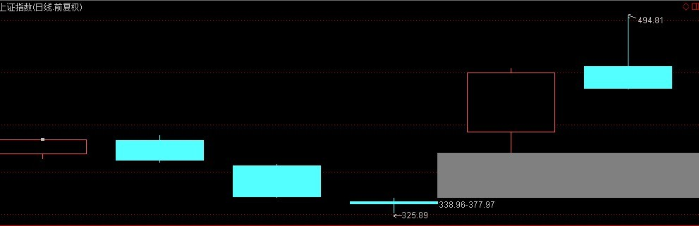
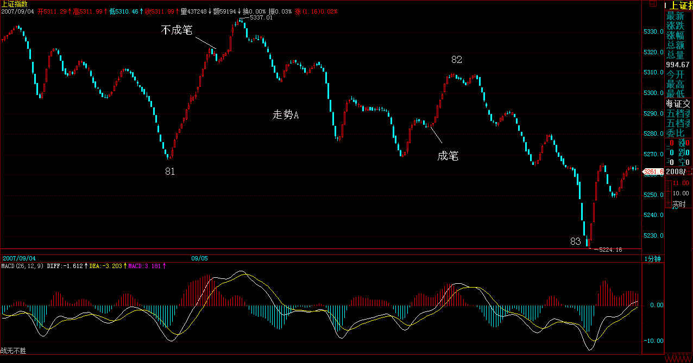
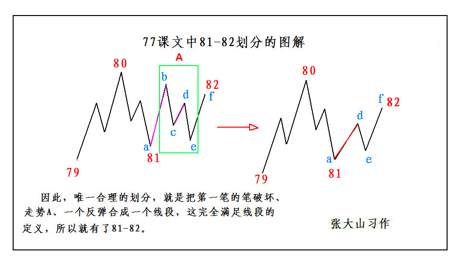

|
 |
教你炒股票77：一些概念的再分辨
(2007-09-05 23:24:01)
梦话不能连续说，现在回到技术上来。对一些概念进行再分辨，因为有些概念太基础，如果搞不清楚，后面永远就一个字：乱。为了不乱，希望是最后一次再把前面最基础的概念分辨一下。
先用缺口的例子说明基于严格分类基础上正确预测的思维方法。任何预测，都必须基于严格分类的基础上，这是一个最基本的思维，否则，整天陶醉在纯概率的游戏中，只能是无聊当有趣。
例如缺口，用向上的为例子。首先，要给缺口一个明确的定义，这定义是有利于分类的，只有明确的定义才有明确的完全分类。何谓缺口，就是在该单位K线图上两相邻的K线间出现没有成交的区间。例如，在上海指数日线单位的K线图里，1994年的7月29日与8月1日，就出现[339,377]这个区间没有成交。那就说，[339,377]是一缺口。而缺口的回补，就是在缺口出现后，该缺口区间最终全部再次出现成交的过程。这个过程，可能在下一K线就出现，也可能永远不再出现。例如[339,377]这一缺口，虽然不敢说永远不再回补，但到股市被消灭前，大概也没什么机会回补了。像本ID之类有幸经历这一天的人，有福了。本ID还记得，本ID当时在1994年7月29日最大量买入的股票，深圳是老星源，上海是大飞乐。

根据缺口的是否回补，就构成了对走势行情力度的一个分类。一、不回补，这显然是强势的；二、回补后继续新高或新低，这是平势的；三、回补后不能新高、新低，因而出现原来走势的转折，这是弱势的。
一般来说，突破性缺口极少回补，而中继性缺口，也就是趋势延续中的缺口，回补的几率对半，但都一定继续新高或新低，也就是至少是平势的。而一旦缺口回补后不再新高、新低，那么就意味着原来的趋势发生逆转，这是衰竭性缺口的特征，一旦出现这种情况，就一定至少出现较大级别的调整，这级别至少大于缺口时所延续的趋势的级别。也就是说，一个日线级别趋势的衰竭性缺口，至少制造一个周线级别的调整。而一个5分钟级别的衰竭性缺口，至少制造一个30分钟级别的调整。
注意，这里的级别和缺口所在的K线图无关，只和本ID理论中的走势类型级别有关。不同周期K线图和走势的级别，就如同不同倍度数显微镜和显微镜所观察的物体，这个比喻反复说了，不能再混淆了。
显然，日K线图有缺口，在日线以下的任何周期的K线图都会相应有缺口，而回补日线的缺口，不一定能回补日线以下周期K线图上的缺口。
另外，在盘整走势中的缺口，与在趋势中的缺口性质不同，属于普通缺口，这种缺口，一般都回补，而且没有太大的分析意义，唯一的意义，就是在中枢震荡中有一个目标，就是回拉的过程中，几乎肯定能至少拉回补掉缺口的位置。
缺口说完了，就再说说，分型、笔、线段的问题。
分型就不用再说了，按定义，只要把包含关系搞清楚，相信连孔男人都应该能描红一番。如果没有包含关系，3个K线就可以决定一个分型，但注意，任何相邻的分型之间必须满足结合律，也就是，不能有些K线分属不同的分型，这样是不允许的。
一般来说，对不熟悉的人，首先应该按定义，把分析的图中的分型按照包含关系以及结合律的最基本处理后给标记好，顶分型可以用向下的箭头、底分型可以用向上的箭头，这样就一目了然了。
有了上面这基础工作，那这个图就可以看成只有这些分型，分型之间的K线都可以暂时不用管。下面的工作，就是确定笔了。笔，必须是一顶一底，而且顶和底之间至少有一个K线不属于顶分型与底分型。当然，还有一个最显然的，就是在同一笔中，顶分型中最高那K线的区间至少要有一部分高于底分型中最低那K线的区间，如果这条都不满足，也就是顶都在低的范围内或顶比底还低，这显然是不可接受的。
因此，在确定笔的过程中，必须要满足上面的条件，这样可以唯一确定出笔的划分。这个划分的唯一性很容易证明，假设有两个都满足条件的划分，这两个划分要有所不同，必然是两个划分从第N-1笔以前都是相同的，从第N笔开始出现第一个不同，这个的N可以等于1，这样就是从一开始就不同。那么第N-1笔结束的位置的分型，显然对于两个划分的性质是一样的，都是顶或底。对于是顶的情况，那么第N笔，其底对于两个划分必然对应不同的底分型，否则这笔对两个划分就是相同的，这显然矛盾。由于分型的划分是唯一的，因此，这两种不同的划分里在第N笔对应的底分型，在顺序上必然有前后高低之分，而且在这两个底之间不可能还存在一个顶，否则这里就不是一笔了。
如果前面的底高于后面的底，那么前面的划分显然是错误的，因为按这种划分，该笔是没有完成的，一个底不经过一个顶后就有一个更低的底，这是最典型的笔没完成的情况。
如果前面的底不低于后面的底，那么如果再下面一个顶分型出现前，如果有一个底分型低于前面的底，那么，这两种划分都是不正确的，所划分的笔都是没完成的；如下面一个顶分型出现前，没有一个底分型低于前面的底，那么下面一个顶分型，必然高于前面的底，因此，前面的底和这个顶分型就是新的N+1笔，因此，第N笔和第N+1笔就有了唯一的划分，这个第N笔开始有不同划分相矛盾。
关于第N-1笔结束的位置的分型是底的情况，可以类似去证明。
综上所述，显然，笔的划分是唯一的。
从上面笔划分的唯一性证明中，其实也知道如何去划分笔的步骤：
一、确定所有符合标准的分型。
二、如果前后两分型是同一性质的，对于顶，前面的低于后面的，只保留后面的，前面那个可以X掉；对于底，前面的高于后面的，只保留后面的，前面那个可以X掉。不满足上面情况的，例如相等的，都可以先保留。
三、经过步骤二的处理后，余下的分型，如果相邻的是顶和底，那么这就可以划为一笔。
如果相邻的性质一样，那么必然有前顶不低于(高于）后顶，前底不高于（低于）后底，而在连续的顶后，必须会出现新的底，把这连续的顶中最先一个，和这新出现的底连在一起，就是新的一笔，而中间的那些顶，都X掉；在连续的底后，必须会出现新的顶，把这连续的底中最先一个，和这新出现的顶连在一起，就是新的一笔，而中间的那些底，都X掉。
显然，经过上面的三个步骤，所有的笔都可以唯一地划分出来。
有了笔以后，就是线段了。线段划分的最基本原则，就是线段必须至少有三笔，这是十分显然的，否则，一笔都能构成线段，那笔和线段又有什么区别？至于两笔为什么不能构成线段，这理由更简单，因为两笔，那么线段的两段的分型的性质肯定是一样的，和笔一样，一个完整线段的两段的分型不可能是同性质的。也就是说，和笔一样，线段也不可能从一个顶开始结束于一个顶，或者从一个底开始结束于一个底。由此可见，线段中包含笔的数目，都是单数的。
而且，线段开始的那三笔，必须有重合，开始三笔没有重合的，是构不成线段的。
另外，线段必须被线段所破坏才能确定其完成。对于线段划分的第一种情况，如果第一笔出现笔破坏后，接着的一笔就创新高，而且再后一笔，根本就不触及笔破坏那一笔，那么，这时候，显然构成不了线段对线段的破坏，因为后面这这三笔没有重合，不可能构成一线段。
而这，用第一种情况的判断法就更明确了，上面这种情况根本不可能形成特征序列的分型，当然就不可能是线段的完成。
再者，线段被线段破坏，必须不能是被同一性质的线段所破坏，也就是从向上一笔开始的线段不可能被向上一笔的线段所有破坏，必然是被从向下一笔开始的线段所破坏。
线段的第二种情况，其实就包含这种情况。也就是，按第一种情况，线段A没有被接着的线段B破坏，但接着的线段C破坏了线段B，因此，线段B是完成的，当然线段A也应该是完成的。注意，这里的线段A、B、C只是用结合律的原则先划分，括弧里面满足线段的基本性质，在这破坏关系没被确认之前，这只是一个假设的称呼。
各位肯定注意，在第二种情况下特别强调，第二特征序列，其实就是对应着线段C对线段B的破坏，不再分第一、二种情况了。这，其实是一个简化的方法。为什么？
如果我们坚持线段的最终破坏回补特征序列缺口情况，那么，如果线段C对线段B还是第二种情况，那么线段C的区间肯定就在线段A特征序列缺口与线段B特征序列缺口之间，如此类推，总会出现一个线段X，使得对应前面的线段是回补特征序列缺口，否则，这些线段的区间就会无限缩小，最后就会形成一个点，这显然是不可能的，学过极限的都应该能理解。所以，在一串的相对前一线段是第二种情况的线段串中，比如最终会出现第一种情况的破坏，这样倒推回来，必然有这一串假定线段间的连续破坏。
正因为这样，所以在第二种情况中的第二特征序列判断中，就不再分第一、二种情况了，这样是免得有一串线段串不断收敛后倒推回来的麻烦。这在数学上当然是绝对完美，但操作起来太麻烦，而且这种特殊的情况很少见，就更没必要了。
那么，为什么要区分第二种情况，因为是不希望在线段的层次上出现小级别转大级别这样不确定的情况，用第二种情况就能解决这个问题。
有一种复杂的情况，在今天的80-83的划分中就出现了。就是对80-81，出现了第一笔的笔破坏，然后接着是一个符合线段标准的走势A，但没有创新低，这样当然不能算是原线段的延续，但线段的破坏也不能算，为什么？因为没有符合要求的三笔。接着，一个反弹，也满足线段的要求，然后就转头继续创新低。这里有一个细微的区别，如果这个反弹只是一笔，那么就没有破坏走势A，后面接着的新底，就意味着走势A依然延续，所以走势A就是原来80-81的延续。
但现在的问题是，这个反弹把走势A给线段破坏了，因此，说走势A依然延续是显然不对的，所以后面的走势和走势A无关，因此，唯一合理的划分，就是把第一笔的笔破坏、走势A、一个反弹合成一个线段，这完全满足线段的定义，所以就有了81-82。

线段的划分，其实一点都不难，关键是要从定义出发。而且用线段划分的两种情况的规定，不难证明，线段的划分也是唯一的。
有什么问题，请继续问，把事情彻底搞明白，才是最重要的。这些补课，会不时展开，但不可能堂堂如此，下一次就要讲新内容了，老问题如果积累到一定程度，会再补课的。
===================================================================
顶底分型的要求：当然，还有一个最显然的，就是在同一笔中，顶分型中最高那K线的区间至少要有一部分高于底分型中最低那K线的区间，如果这条都不满足，也就是顶都在低（底）的范围内或顶比底还低，这显然是不可接受的。
3、课文学习用图：

建行引领大盘前行
(2007-09-06 15:55:55)
这题目没错，就是建行引领大盘前行，建行发行的意义，在昨天已经说得很清楚了，而建行作为这次大规模回归的首家，其最终的表现，将对后面的回归者有极大的指标意义。因此，像尾盘出现中行等飞速拉起的情形，就一点都不奇怪了。
不过有点必须明确，本ID昨天回答问题时说到中国联通的一些题材，并不是正式的东西，就当成梦话吧。本ID有联通，这里的人应该很多都知道，在春节前后，在这里还连续N天直播过联通上5元的活动。这是本ID要海枯石烂的股票，中移动在香港100元多，如果中移动的GSM业务都给了联通，本ID也不知道联通该多少钱，但联通搞GSM、移动搞大唐玩意、电信搞CDMA，并不是什么正式公告，只是一种还未被最后正式批准的可能方案，其实本ID在以前回答问题的时候也多次说过，但从来没在文章里说过，所以只能当梦话，相信者有毛病。至于整体上市、中移动回归，都是很明确的，只是迟早的事情，所以对联通的判断，要以此为准。
本ID其实不愿意回答个股问题，本ID告诉的股票都是本ID正买着的，当然，本ID建仓的过程可能很长，但本ID在这里第一次说的时间，肯定和本ID第一笔建仓的时间是同一日，甚至更早，这点是没问题的。例如潍柴，5月15日写诗，也是本ID买的第一天，本ID把自己买的股票说出来，不存在推荐的问题，这就如同告诉各位，本ID中午吃了点什么一样。今天中午，本ID只喝了点果汁，就这样了。
大盘没什么可说的，补完缺口后创新高，也就是说周一的缺口依然只是中继性质的，那游戏继续。
下面再次用明确的语言给出目前的操作守则：
一、一旦有致命的消息，手起刀落，让股票见鬼去。
二、没消息就是最好的消息，用尽一切手段疯狂去。
三、最懒的办法，看5日、5周线。
四、针对那三种技术形态的股票，分类操作。（以前用600636、600737、000938为例子说过。）
五、目前位置，就不要抱什么长线打算了，长线打算是在长线买点去打算的。现在只是疯狂的游戏阶段，成功的唯一标准只有一个：把钱赚到袋子里又不被刀子伤着。
六、对于中长线投资者，只战略性持有等待中线卖点的出现，然后用部分仓位去进行降低成本或赚取筹码的操作。
这六点里，对于短线来说，第一条是最重要的，第二条是最实际的。
今天有事要忙，不能回答问题了，对不起，先下，再见。
|
|
|
|